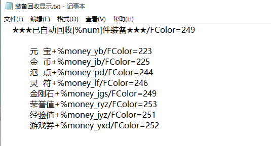
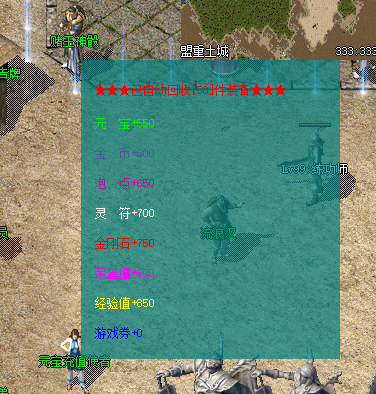

装备回收系统
开启和关闭命令
BackpackRecovery
参数1
参数1：1=开启回收、0=关闭回收
序号开关命令
SetNumber 参数1 参数2
参数1：序号
参数2：1=开启、0=关闭
单次回收命令
RECOVERITEMBYLIST
1,2,3,4
参数1:可空，为空时回收所有组，多个组以英文逗号组合。只执行一次回收
例子:
#IF
#ACT
BackpackRecovery 1
;首先要用这个命令开启此用户允许使用自动回收装备，否则激活回收序号也是没用的，这是个总开关
SetNumber 0 1
SetNumber 9 1
;这两条命令是激活回收序号0和9，M2里面自己添加0和9的回收序号，系统就会按照0和9的序号自动回收装备
；如果只想回收序号9的装备，不想回收0的序号那就这样写
SetNumber 0 0
SetNumber 9 1
；如果都关闭回收序号，那就这样写
SetNumber 0 0
SetNumber 9 0
回收相关触发及常量
序号触发QF：
[@BackpackRecovery_1]
#Act
sendmsg 6 回收序号1数量为：<$BACKRECOVERYNUM>，元宝：<$BACKRECOVERYYB>，金币：<$BACKRECOVERYJB>，泡点：<$BACKRECOVERYPD>，灵符：<$BACKRECOVERYLF>，金刚石：<$BACKRECOVERYJGS>，荣誉值：<$BACKRECOVERYRYZ>，经验值：<$BACKRECOVERYJYZ>，游戏点：<$BACKRECOVERYYXD>
单件装备触发QF：
该触发为每回收一件就触发一次，慎用
[@BackpackRecoverySingle]
#Act
sendmsg 6 回收名字为：<$BACKRECOVERYNAME>
显示信息配置及格式
显示信息的文本名字叫 装备回收显示.txt
放入
Mir200\Envir\装备回收显示.txt
并勾选M2显示回收数据即可
★★★已自动回收[%num]件装备★★★/FColor=249
元
宝+%money_yb/FColor=223  
金
币+%money_jb/FColor=225
泡
点+%money_pd/FColor=244
灵
符+%money_lf/FColor=246
金刚石+%money_jgs/FColor=249
荣誉值+%money_ryz/FColor=253
经验值+%money_jyz/FColor=251
游戏券+%money_yxd/FColor=252